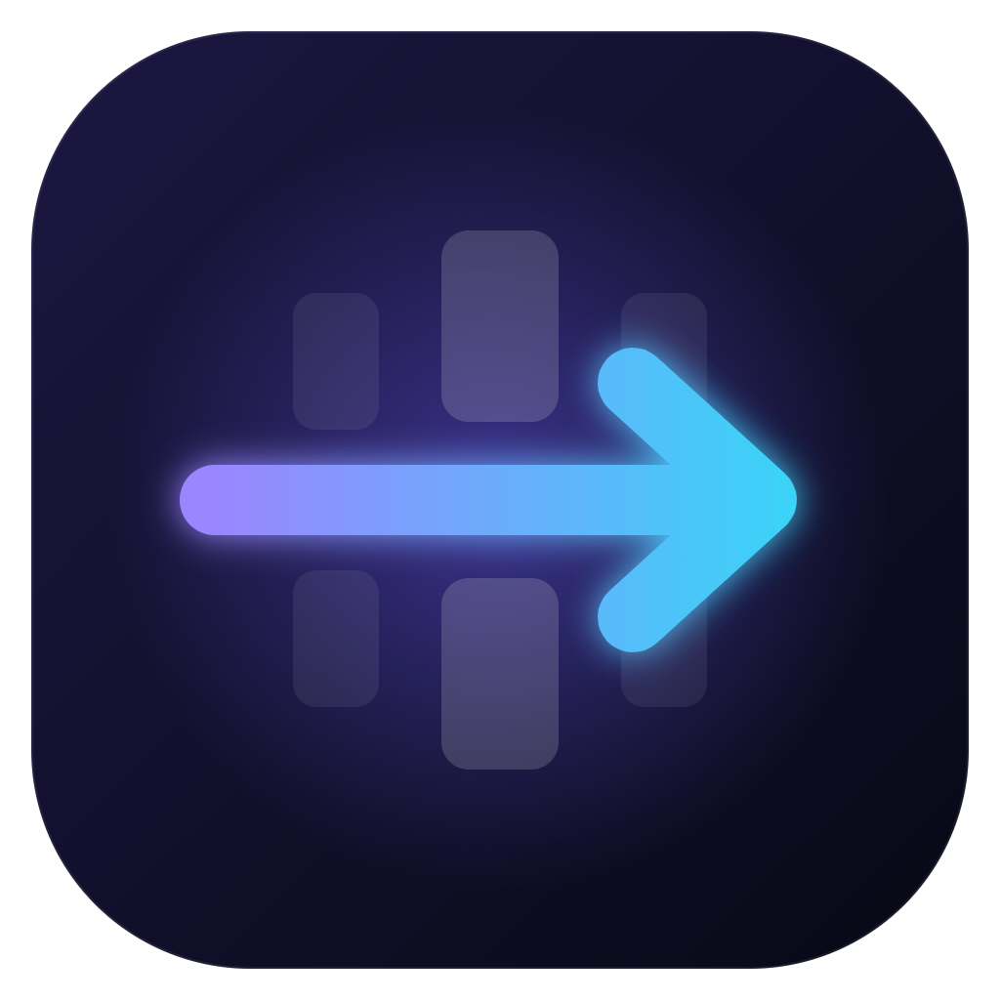

Установка zapret
Папка zapret
—

Zapret, Telegram proxy и VPN в одном окне
«Подобрать» останавливается на первом конфиге, который открыл всё. Если обход запущен, он перезапустится с найденным конфигом.
—
Zapret ещё не установлен.
Адрес локального прокси и секрет для клиента Telegram
Skvoz создаст конфиг Cloudflare WARP с маскировкой AmneziaWG, сам найдёт рабочий сервер и подключится. Ничего искать и устанавливать не нужно
Обычно хватает 10–30 секунд. При автоподборе проверяется до шести вариантов
РКН блокирует регистрацию WARP из России. Skvoz сам включает обход zapret на время регистрации, но если не помогло — запустите генератор на бесплатном сервере GitHub, как советует автор bash-warp-generator:
bash warp_generator.shwarp.conf (правый клик по файлу → Скачать) и откройте его здесьТекущий конфиг или свой .conf от VPN-сервера. Всё работает внутри Skvoz — ставить AmneziaWG не нужно
Что включается само и что делает крестик
При входе в Windows
При открытии Skvoz
Окно
Skvoz сам выбирает конфиг и следит, чтобы сайты открывались
Подбор конфига
Если сайты перестали открываться
Через запятую, до 5. Пусто — YouTube и Discord из списка zapret
Что именно пропускает обход. Применяются при следующем запуске
Добавить сайт в обход или исключить из него
—
Приложение, zapret и списки адресов — всё в одном месте
Skvoz
Zapret
Списки и данные
Проверка соединения, состояние winws и отчёт для баг-репорта
Интернет, DNS, curl и конфликты
Запущен ли winws.exe
Файл для баг-репорта, без личных данных
Если zapret мешает или больше не нужен. Обычно это не требуется
Снять службы zapret и WinDivert
Стоп, очистка и удаление папок
Skvoz v—
Skvoz работает благодаря этим проектам. Тексты лицензий лежат в папке программы: resources\licenses